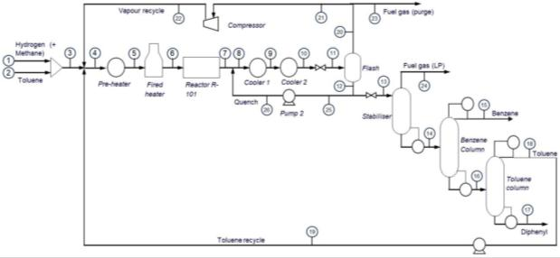

Public evidence / Release 6
Follow the result back to its source.
Original aggregates, report figures and runnable display checks. No raw laboratory spectra are included.
Read evidence and reproduction guideRead reproduction guide1. Measured N₂ alarm comparison
Author-index-127 logistic regression. The interactive policy values are generated from these original saved aggregates. Percentages are macro means across six reused role permutations, not pooled-frame rates.
- Original calibration aggregate CSV
- Original per-run calibration metrics
- Original guard / coverage aggregate CSV
- Generated three-policy comparison CSV
37,814 unique future frames reused across comparisons; three sessions, not six independent trials. Normal-reference frames and early leaks before the reference are excluded. Valve/time effects remain unresolved.
Public dataset: Youngjun Yuk, Mendeley Data v1, CC BY 4.0. This is a separate benchmark, not validation of Ar-to-N₂ transfer.
2. Synthetic noise and reconstruction
- All model / covariance aggregate comparisons
- Drift-family comparisons and seed ranges
- Selected reconstruction summary fields
- Original synthetic phantom figure

Five reused seeds, assumed noise covariance, fixed models and thresholds. Min/max ranges are descriptive rather than confidence intervals. No universal superiority claim for physics-trained SVM.
3. Process design evidence
Transcribed report case CSVExplicitly transcribed from Group_23.pdf, pp. 1 and 11-13. TAC reduction = (121.96 − 98.75) / 121.96 = 19.03%. Team coursework estimates, not realised plant savings.

Original base-case report figure, p. 2; limited original resolution. This is not an Aspen model download.
What can be reproduced?
| Executable checks included | Outside this release |
|---|---|
| Source CSV to UI values; policy state and export; 2,520 saved replay scenarios and four model decisions per scenario; economic arithmetic; evidence hashes | Fresh physical tests, complete raw-data model training, unpublished laboratory inputs, Aspen re-simulation and causal leak identification |
Run python3 scripts/build-evidence.py, python3 scripts/verify-evidence.py and node --test tests/*.test.mjs from the ZIP root. Then serve dist with python3 -m http.server 8000 --directory dist.